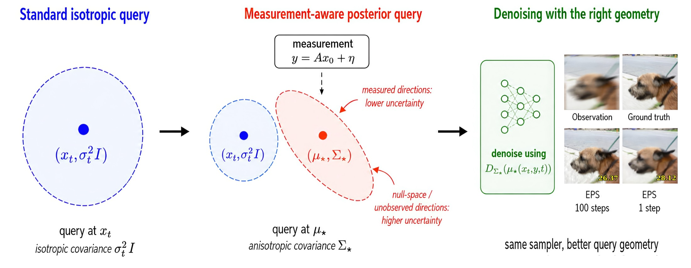
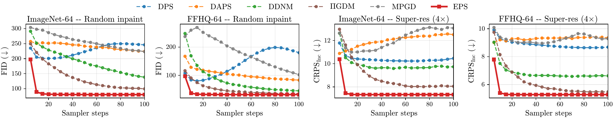
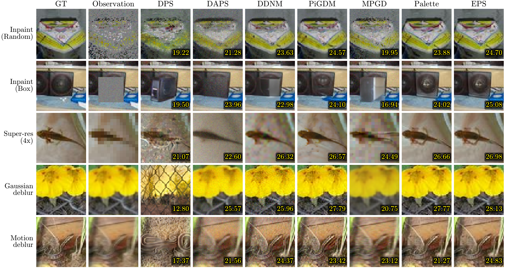
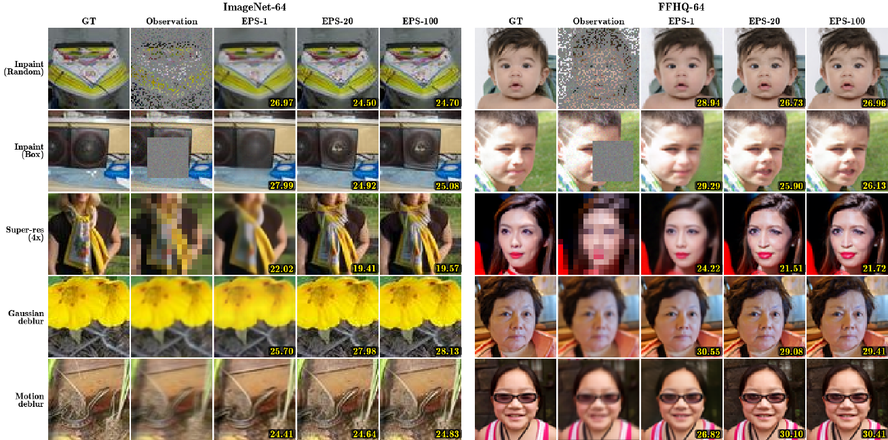
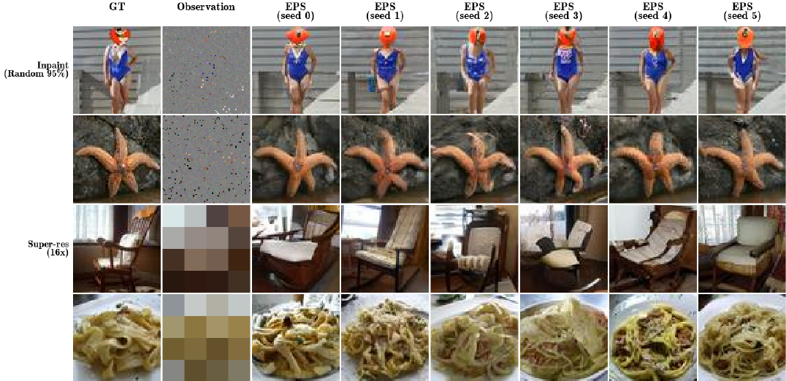
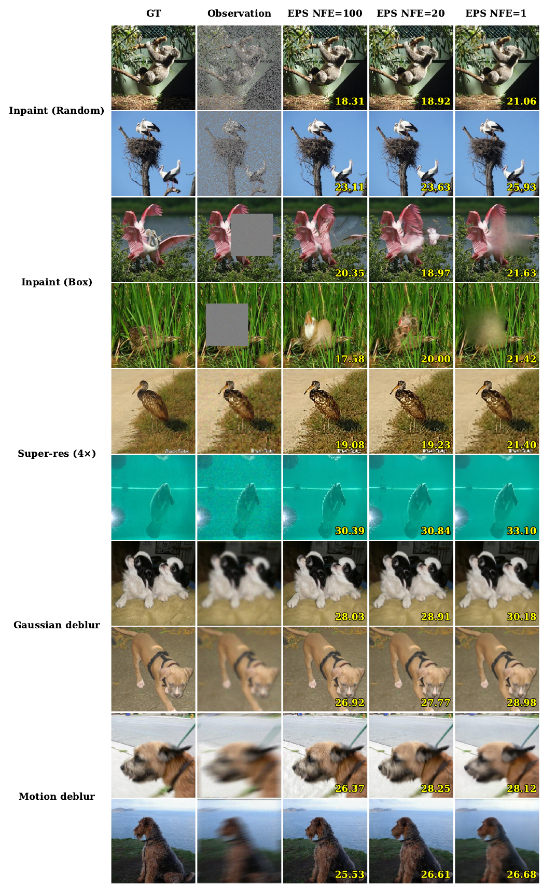

ImageNet · random inpaint · FID
99.6 → 77.1 vs. best zero-shot ($\Pi$GDM)
Abstract
Posterior sampling, exactly
Diffusion and flow models learn powerful data priors, but to solve a linear inverse problem $y = A x_0 + \eta$ the reverse sampler needs the posterior score $\nabla_{x_t}\log p(x_t\mid y)$, not the unconditional prior score the model provides. Existing methods either steer a fixed denoiser with approximate measurement corrections, or train a conditional model that abandons the denoising structure of the prior.
We derive the exact posterior score in closed form for linear Gaussian inverse problems and show that posterior sampling reduces to a denoising problem at an operator-dependent shifted pivot $\mu_\star$ under an anisotropic noise covariance $\Sigma_\star$. We turn this identity into Exact Posterior Score (EPS), a denoising objective that preserves the input/output structure of standard pretraining — so it trains from scratch or fine-tunes from a pretrained denoiser. At inference, EPS runs the backbone's own sampler unchanged, with no likelihood gradients or projections, using roughly an order of magnitude fewer denoiser evaluations than gradient-based posterior samplers.
5linear inverse problems
~20NFE to converge
1.006×cost of the bare denoiser
1NFE posterior-mean estimate
Method
Denoising at the right query geometry
Instead of denoising an isotropic query at $x_t$, the measurement shifts the query to the posterior pivot $\mu_\star$ and reshapes the noise into an anisotropic covariance $\Sigma_\star$: measured directions become certain, unobserved directions stay uncertain. The same backbone sampler runs unchanged.

Theorem 1 — exact posterior score
$$\nabla_{x_t}\log p(x_t\mid y)=\frac{1}{\beta_t^2}\Big(\alpha_t\,D_{\Sigma_\star}\!\big(\mu_\star\big)-x_t\Big)$$
Pivot & covariance
$$\Sigma_\star=\Big(\tfrac{\alpha_t^2}{\beta_t^2}I+\tfrac{1}{\sigma_y^2}A^\top A\Big)^{-1},\quad \mu_\star=\Sigma_\star\Big(\tfrac{\alpha_t}{\beta_t^2}x_t+\tfrac{1}{\sigma_y^2}A^\top y\Big)$$
EPS training objective
$$\mathcal{L}_{\mathrm{EPS}}=\mathbb{E}\big[\,w(t)\,\|D_\theta(\mu_\star,y,t)-x_0\|^2\,\big]$$
The target stays a clean image $x_0$ and the loss stays squared error — only the input changes from $x_t$ to the pivot $\mu_\star$. Training-free solvers (DPS, DDNM, $\Pi$GDM) instead query the network at $x_t$ and approximate $D_{\Sigma_\star}(\mu_\star)$ with the unconditional denoiser $D_t(x_t)$; that gap is exactly what EPS closes.
Quantitative results
Best on the majority of metrics, at a fraction of the budget
Five linear inverse problems on FFHQ-64 and ImageNet-64, every baseline under the same backbone and protocol. EPS wins on pointwise fidelity, perceptual quality, and distributional calibration alike.
NFE to plateau
~20 baselines climb past 100Sampling cost vs. bare EDM
1.006× DPS / $\Pi$GDM ≈ 2.3×1-NFE posterior mean · PSNR
26.60 dB ImageNet random inpaint
| Task | Method | NFE | PSNR↑ | SSIM↑ | LPIPS↓ | FID↓ | MMDpix↓ | MMDInc↓ | CRPSpix↓ | CRPSInc↓ |
|---|
| Task | Method | NFE | PSNR↑ | SSIM↑ | LPIPS↓ | FID↓ | MMDpix↓ | MMDInc↓ | CRPSpix↓ | CRPSInc↓ |
|---|
All five baselines and all metrics shown; EPS rows highlighted. Pointwise (PSNR, SSIM), perceptual (LPIPS, FID), and distributional (MMD, CRPS in pixel & Inception space) — scroll horizontally for the full set. † The 1-NFE row is a single high-noise Tweedie call returning the posterior mean $\mathbb{E}[x_0\mid y]$ — MMSE-optimal in pixel space, hence strong PSNR/SSIM.
Wall-clock cost · ImageNet-64, NFE=100, B200 GPU
| Method | s / image | × EDM |
|---|---|---|
| EDM (uncond., reference) | 1.87 | 1.00× |
| DDNM | 2.51 | 1.34× |
| MPGD | 2.52 | 1.35× |
| DAPS | 4.07 | 2.18× |
| DPS | 4.28 | 2.29× |
| $\Pi$GDM | 4.54 | 2.43× |
| EPS (ours) | 1.88 | 1.006× |
EPS solves the inverse problem at essentially the cost of running the bare denoiser — no backward pass, no nested rollout.
Qualitative results
Reconstructions across the five tasks
EPS keeps sharp prior structure while matching the observation: the pivot separates measured from unmeasured directions, and $\Sigma_\star$ sets how much to denoise along each.




For more results and ablations — the input-pivot analysis, zero-shot pivoting, warm-start convergence, sampling-step sensitivity, amortization across operators, and ImageNet-$256$ scaling — see our paper.
Cite
BibTeX
@misc{mammadov2026exactposteriorscoreestimation,
title={Exact Posterior Score Estimation for Solving Linear Inverse Problems},
author={Abbas Mammadov and Ozgur Kara and Kaan Oktay and Iskander Azangulov and Adil Kaan Akan and Hyungjin Chung and James Matthew Rehg and Yee Whye Teh},
year={2026},
eprint={2606.17048},
archivePrefix={arXiv},
primaryClass={cs.LG},
url={https://arxiv.org/abs/2606.17048},
}